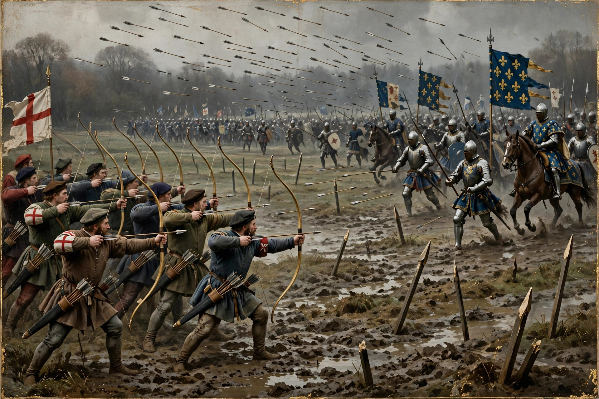

| Battle of Agincourt | |
|---|---|
 | |
| Date | 25 October 1415 |
| Location | Near Azincourt, Pas-de-Calais, France |
| Result | Decisive English victory |
| Belligerents | Kingdom of England · Kingdom of France |
| Commanders | Henry V of England · Charles d'Albret †, Jean II Le Maingre (Boucicaut) |
| Strength | c. 6,000–9,000 (mostly longbowmen) · c. 12,000–30,000 |
| Part of | Hundred Years' War |
The Battle of Agincourt (French: Azincourt) was an English victory in the Hundred Years' War, fought on 25 October 1415 — the feast day of Saints Crispin and Crispinian — near Azincourt in northern France. An English army led by King Henry V, weakened by disease and outnumbered by the French force opposing it, inflicted a devastating defeat on a much larger French army, in large part through the massed use of the English longbow.
Henry V invaded France in August 1415 to press the English claim to the French throne, capturing Harfleur after a siege that cost his army heavily through dysentery. Rather than returning to England, Henry marched overland towards Calais. A French army under the Constable of France, Charles d'Albret, blocked his path near Agincourt, forcing the exhausted English to give battle on ground of the French army's choosing — a narrow, recently ploughed field between two woods, sodden after heavy rain.
Henry deployed his men-at-arms in the centre with archers on the wings, protected by sharpened wooden stakes driven into the ground. When the French failed to attack, the English advanced within longbow range and opened fire, provoking the French into action. French cavalry charges foundered in the mud and were shot down; the main French divisions, advancing on foot across the churned field in heavy armour, became compressed and exhausted, and were cut down by the English men-at-arms and by archers who joined the melee with swords and axes. Constable d'Albret and many of the greatest nobles of France were killed; the Duke of Orléans and Marshal Boucicaut were captured. English losses were remarkably light by comparison. At one point Henry ordered the killing of French prisoners, fearing a renewed attack — an act debated by contemporaries and historians alike.
Agincourt destroyed much of the French military aristocracy and shattered French morale. Henry returned to England in triumph, and within five years the Treaty of Troyes (1420) recognised him as heir to the French throne. The battle became a centrepiece of English national mythology, immortalised in William Shakespeare's play Henry V, with its "band of brothers" speech on St Crispin's Day. Modern historians debate the true size of the French army and the margin of English inferiority, but agree that the longbow, terrain, and French command failures combined to produce one of the most lopsided victories of the medieval period.
See also: Henry V of England · English longbow · Battle of Crécy · Battle of Poitiers